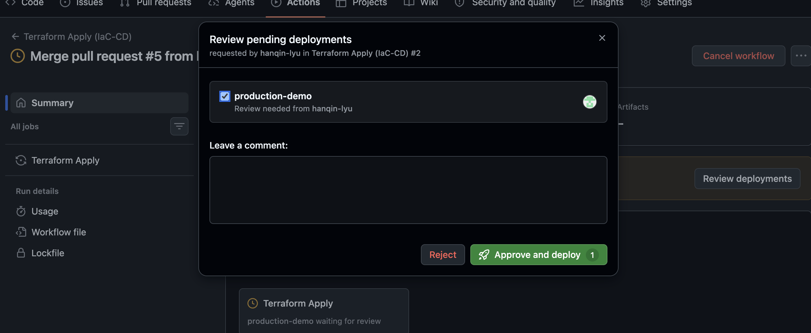
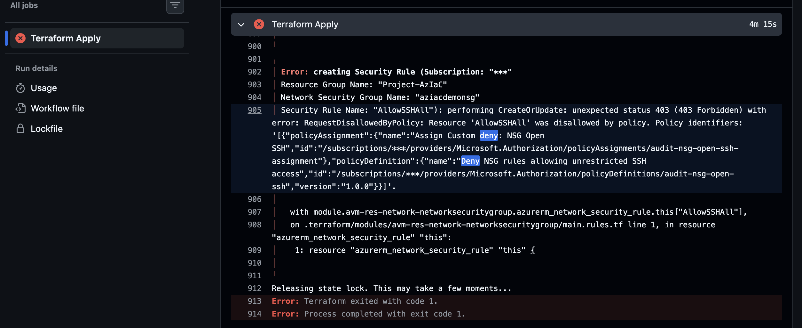

Two layers of defence for Azure delivery: pre-deployment gates that developers can see, and a subscription-level Azure Policy that nobody can bypass — built as code, deployed with secret-free OIDC, and developed alongside an AI coding agent that holds no cloud credentials.
The workload is a small expense-assistant platform: SQL Database, Key Vault, a storage account with immutable audit-log retention, an Azure AI Services account, and a VNet with an NSG — 36 Terraform-managed resources (9 Azure resources plus module helpers) from 6 Azure Verified Modules, all defined in Terraform and deployed only through a pipeline.
The question behind the project: what stops an engineer from shipping an NSG that exposes SSH to the internet, and what still stops them if they bypass the review? To answer it with evidence instead of opinion, I seeded two misconfigurations on purpose (an open-to-the-world SSH rule and a hardcoded SQL password default) and measured which layer catches each one, and when.
terraform plan runs| Metric | Without guardrails | With this pipeline |
|---|---|---|
| Infrastructure delivery | Portal clicks, no review trail | 36 Terraform-managed resources (9 Azure resources) from 6 AVM modules, deployed only by the CD identity |
| Stored cloud credentials | Client secret in CI settings | 0 client secrets; 2 federated OIDC identities |
| Pre-deployment gates on a PR | None | 3 (format/validate, Checkov, gitleaks) before plan |
| IaC scanner findings on the workload | 0 reported — scanner could not see inside AVM modules | 8 failed checks surfaced, 4 after documented triage (1 deliberate demo finding + 3 known gaps) |
| Seeded open-SSH rule | Reaches production | Flagged by CKV_AZURE_10 in the PR |
| Seeded hardcoded password | Reaches production | Flagged by a custom gitleaks rule in the PR |
| Production apply | Auto-apply on merge | 1 required reviewer on a GitHub Environment |
| Policy scope | One resource group | Entire subscription |
| When CI checks are bypassed (admin merge) | Violation deploys | Blocked at deploy time by Azure Policy (Deny) |
| AI coding agent | Unconstrained shell on a machine with cloud access | 9 permission deny rules + a CLAUDE.md contract; no standing Azure credentials |
GitHub Actions runs everything that can be checked without touching Azure first, and only then lets a read-only identity produce a plan.
flowchart LR
PR["Pull request
touching the workload code"] --> G1["Gate 1
terraform fmt + validate"]
PR --> G2["Gate 2
Checkov with external
modules downloaded"]
PR --> G3["Gate 3
gitleaks on the
working tree"]
G1 --> P["terraform plan
CI identity - Reader"]
G2 --> P
G3 --> P
P --> M["Merge to main"]
M --> A{"Manual approval
GitHub Environment"}
A --> D["terraform apply
CD identity - Contributor"]
D --> ARM["Azure Resource Manager
+ subscription Azure Policy"]
Plan runs only if all three gates pass. A shared concurrency group stops plan and apply from fighting over the Terraform state lock.
| Tool | What it checks | What it caught here |
|---|---|---|
| Terraform fmt / validate | Formatting and configuration validity | AVM input mistakes made during authoring (VNet parent_id, NSG association, SQL admin settings) |
| Checkov (SARIF to Code Scanning) | Resource-level misconfiguration, including inside registry modules | CKV_AZURE_10: SSH open to the internet, traced to the exact rule and calling line |
| gitleaks (custom rule) | Hardcoded credentials in the files themselves | Hardcoded default on a SQL password variable |
| terraform plan (CI identity) | Exactly what would change, using real state | Showed the full change set (36 to add, 0 to destroy) with the intended resource group and names before the first apply |
A green scan that scanned nothing. The first Checkov run reported no findings. That was not a pass — the risky
settings live in AVM module inputs, and by default Checkov never downloads registry modules, so it never saw an
azurerm_network_security_rule. Enabling external-module download made the open-SSH rule appear immediately. The lesson I now
apply to every scanner: prove it can fail on a known-bad input before trusting it on a good one.
No client secrets anywhere. Each actor gets the smallest permission set that lets it do its one job.
| Actor | Can | Cannot |
|---|---|---|
| CI identity (GitHub OIDC) | Read the subscription; read and lock Terraform state (Blob Data Contributor on the state account only); run plan | Create or change any resource |
| CD identity (GitHub OIDC via Environment) | Apply the workload after a human approves | Modify Azure Policy — Contributor has no Microsoft.Authorization write |
| Claude Code agent | Edit the workload code; run fmt, validate and Checkov locally | apply, destroy, force-unlock, az login, edit the policy module, read state files |
| Security owner (me, local, time-boxed) | Deploy and change the Policy module | Nothing persists — login only for the operation, then logout |
The CD job runs under a GitHub Environment with a required reviewer, so merging to main never applies by itself.
Moving the job into an Environment also changes the OIDC subject GitHub presents, so the CD identity needed a second federated credential
scoped to that Environment — the Entra portal pre-filled a subject containing unresolved {Organization ID} placeholders, which
would have silently never matched.

CD pauses at the production-demo Environment until the reviewer approves.
Scanners run where the author controls them. Policy runs inside Azure Resource Manager, where the author has no say.
sequenceDiagram
participant CD as CD identity
participant ARM as Azure Resource Manager
participant Pol as Azure Policy
Note over Pol: Round 1 - effect is Audit
CD->>ARM: Create NSG rule AllowSSHAll, port 22 from any source
ARM->>Pol: Evaluate the request
Pol-->>ARM: Non-compliant, audit event logged
ARM-->>CD: Created
Note over Pol: Round 2 - effect switched to Deny, 0 to add, 2 to change, 0 to destroy
CD->>ARM: Create the same rule with the same code and identity
ARM->>Pol: Evaluate the request
Pol-->>ARM: Deny
ARM-->>CD: 403 RequestDisallowedByPolicy
In both rounds the failing scan gates were bypassed by an admin merge — only the Policy effect differed.

Round 2 CD log: the platform rejects the rule that Round 1 allowed. Subscription IDs are masked by GitHub.
Claude Code in VS Code is part of the workflow, so it is governed like any other privileged actor.
| Control | What it does | Strength |
|---|---|---|
| CLAUDE.md | Repository contract: directory ownership, hard rules, the deliberate demo fixtures, and the pre-PR loop (fmt, validate, Checkov) | Guidance — probabilistic |
| Permission deny rules (9) | Block apply, destroy, force-unlock, az login, edits to the policy module, and reads of state files | Enforced by the client, but pattern-based and bypassable |
| No standing Azure credentials | Apply is only possible through the CD pipeline, behind a human approval | The real backstop |
terraform.tfvars is correctly gitignored, so CI and CD saw only the defaults in variable.tf — including a placeholder subscription and a resource group named rg. Reading the variable defaults exposed that the pipeline would have deployed to the wrong place, so CI and CD now inject the real values as TF_VAR_*, and the first CI plan confirmed the intended names.Stated openly so the scope of the claims is clear.